Temazcalli-Dome
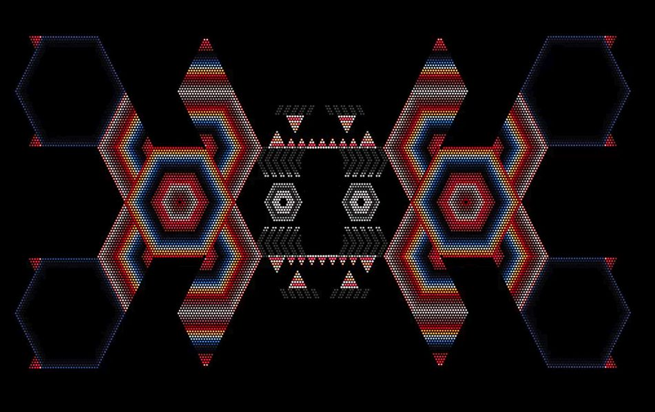
The Temazcalli Dome project is an audiovisual experience that transports the audience through an intense journey from within the medical and ritual practice of the temazcal towards the constellation of the Pleiades showing intricate patterns that emulate the cosmic and mythological visions of the Huichol people.
FullDome Projection Mapping
Projection mapping, Prehispanic instuments, 8K & 4K visuals, Custom Software, Surround 5.1, 4.1, and stereo high-bitrate sound / Duration 5"
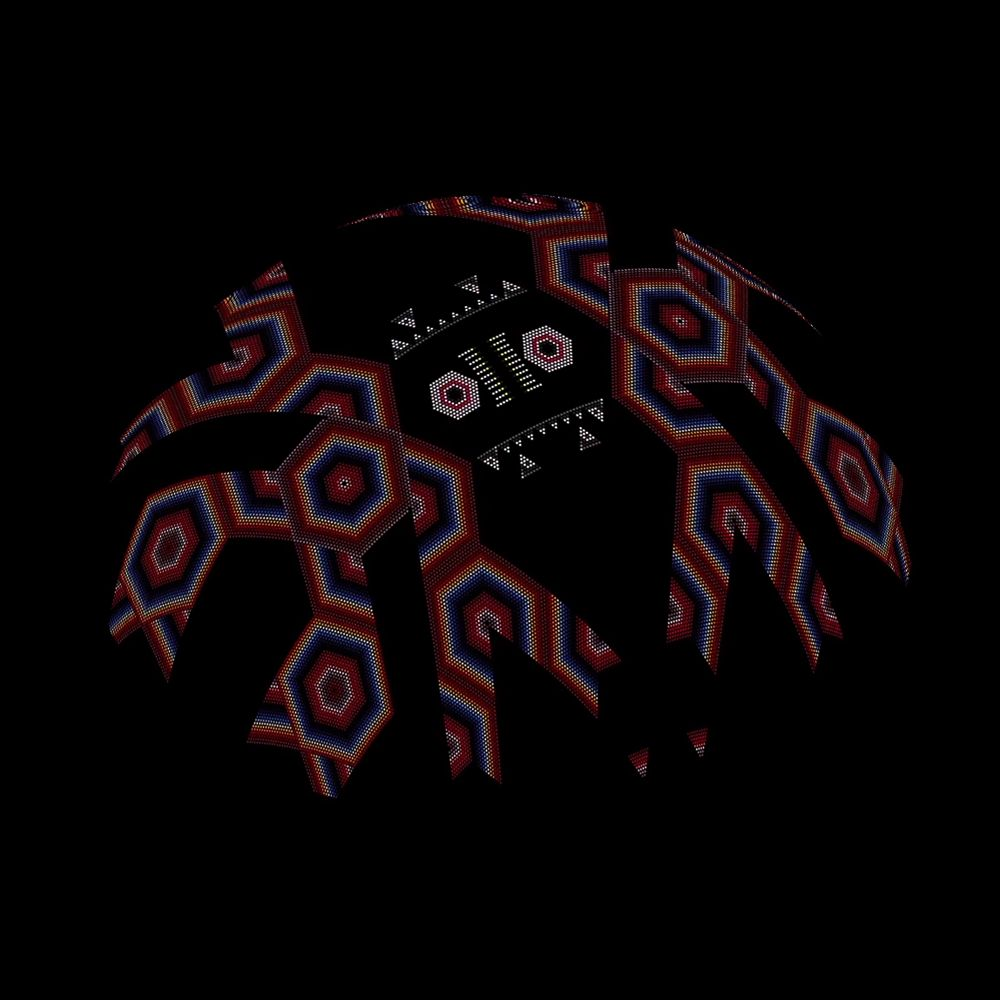
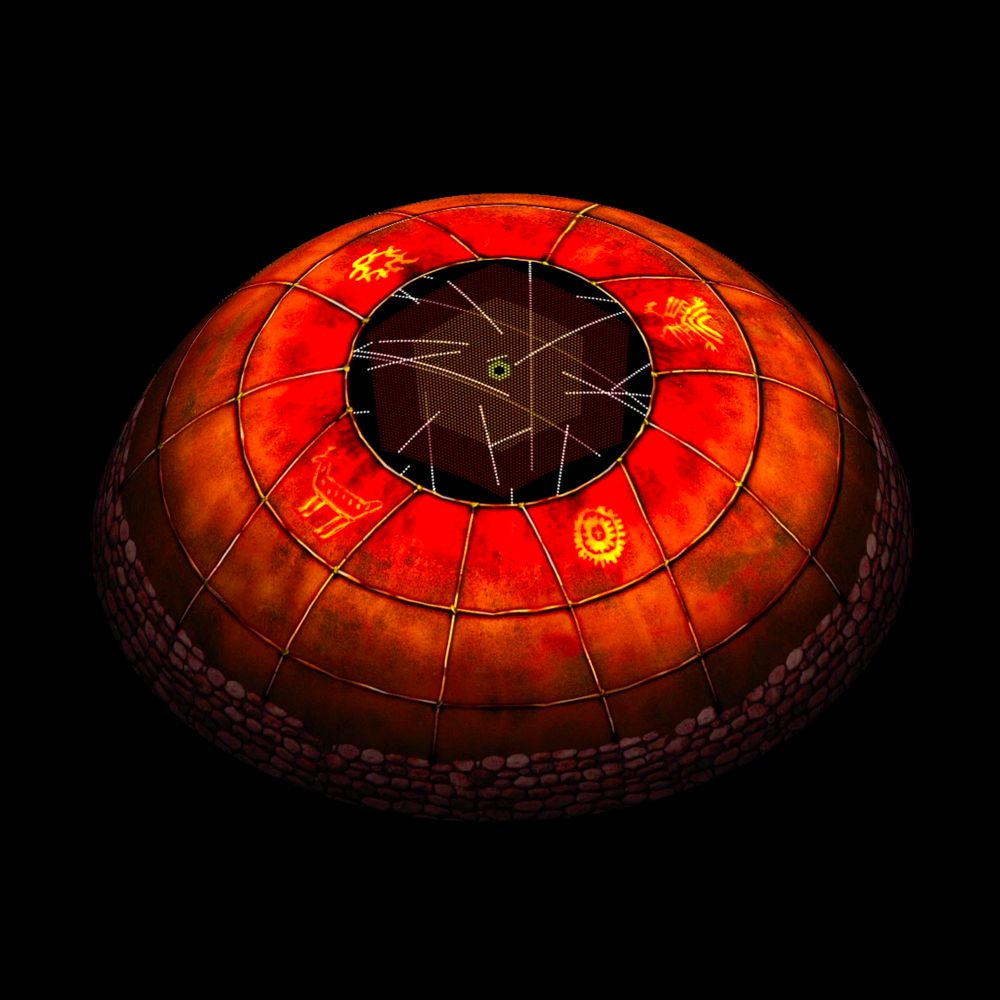
The Aesthetics of Temazcalli-Dome
Temazcalli-Dome is an immersive voyage through the Huichol spiritual experience that honors the hypnotic patterns of Huichol's art, uses shamanic voices in surround spatiality, and recreates ritualistic music actually built with traditional prehispanic instruments.
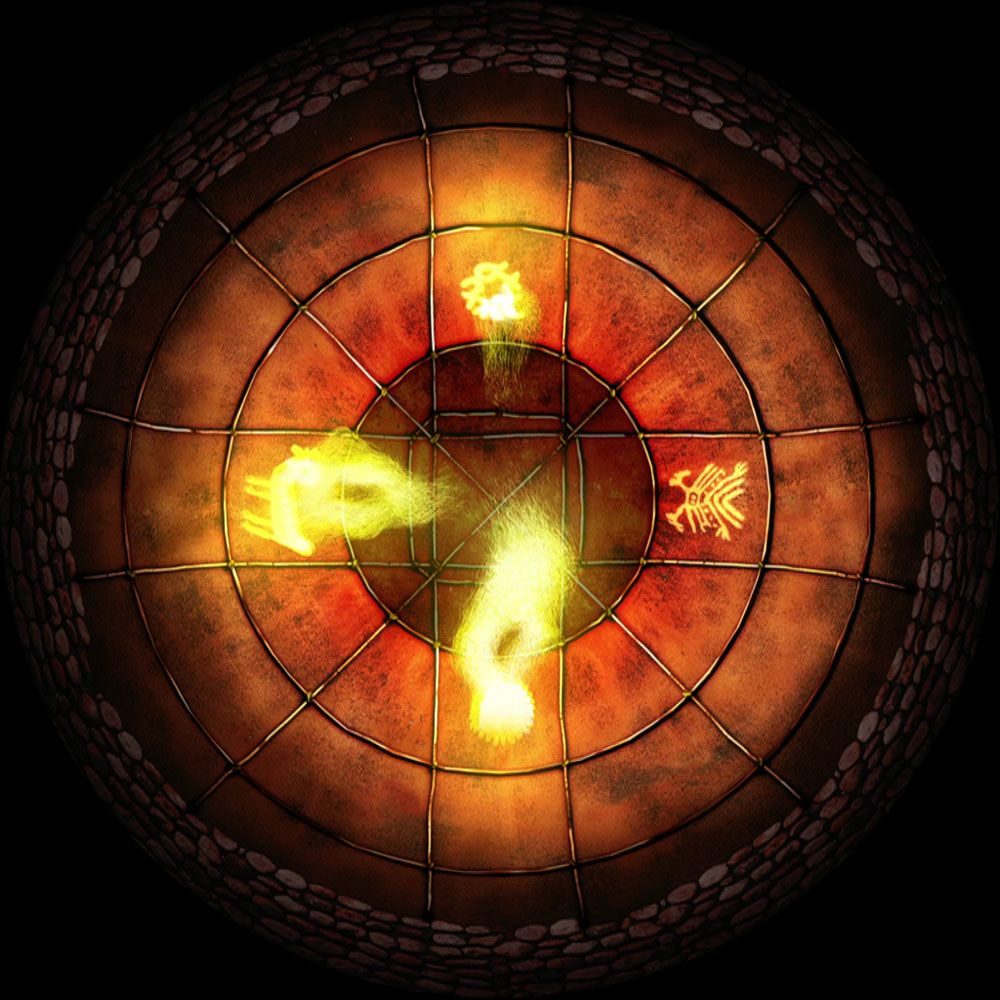
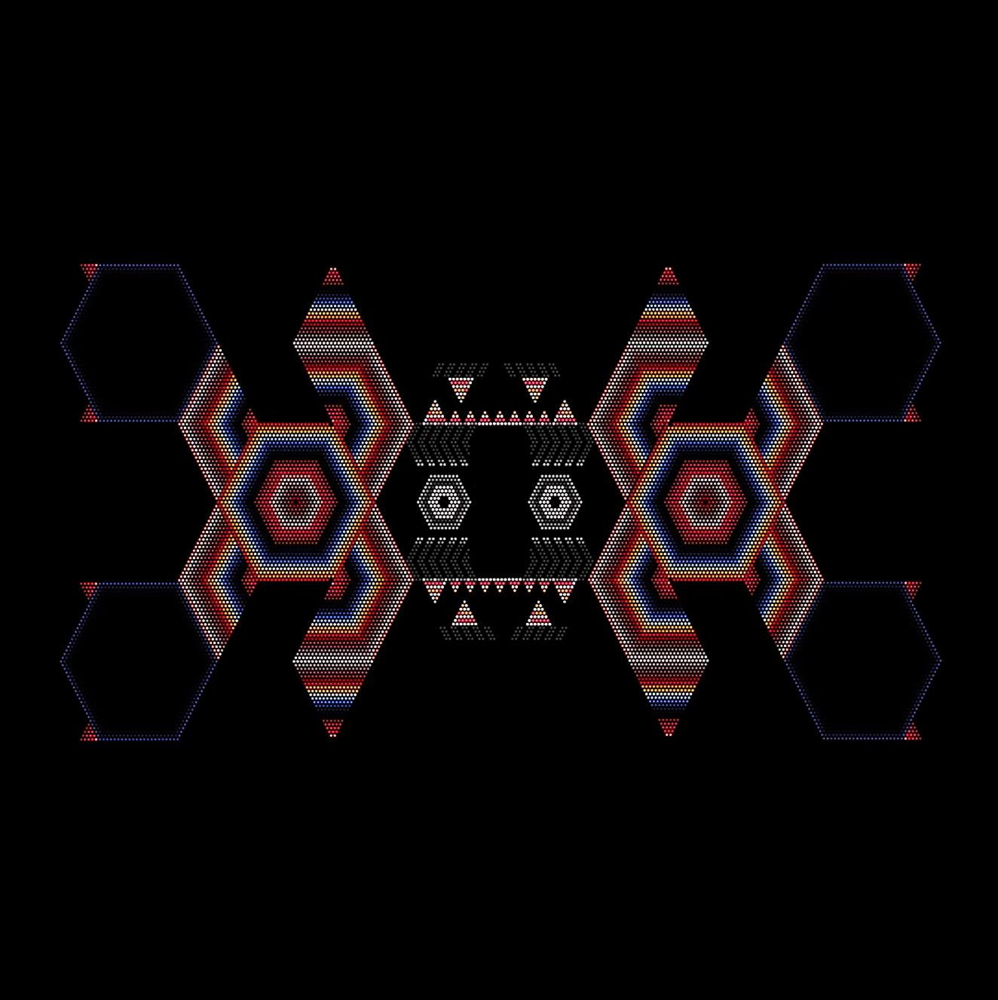
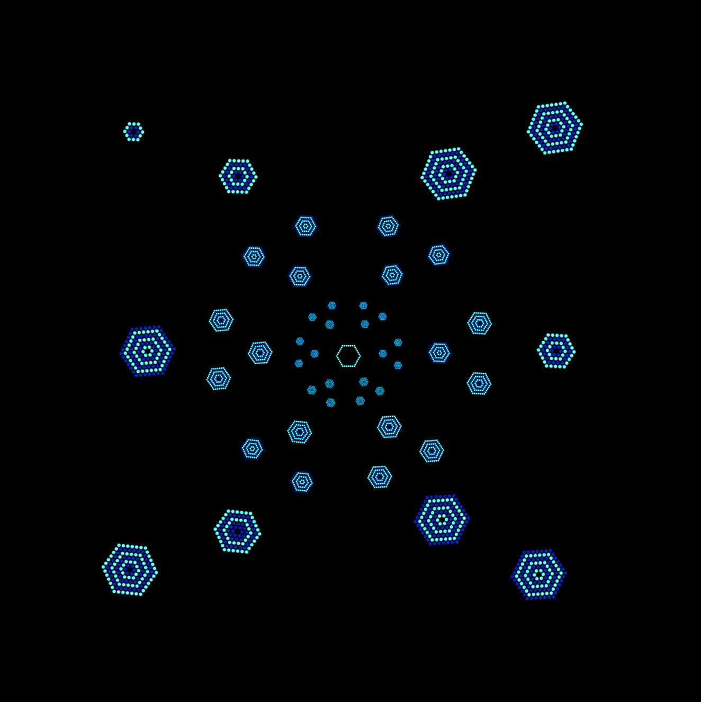
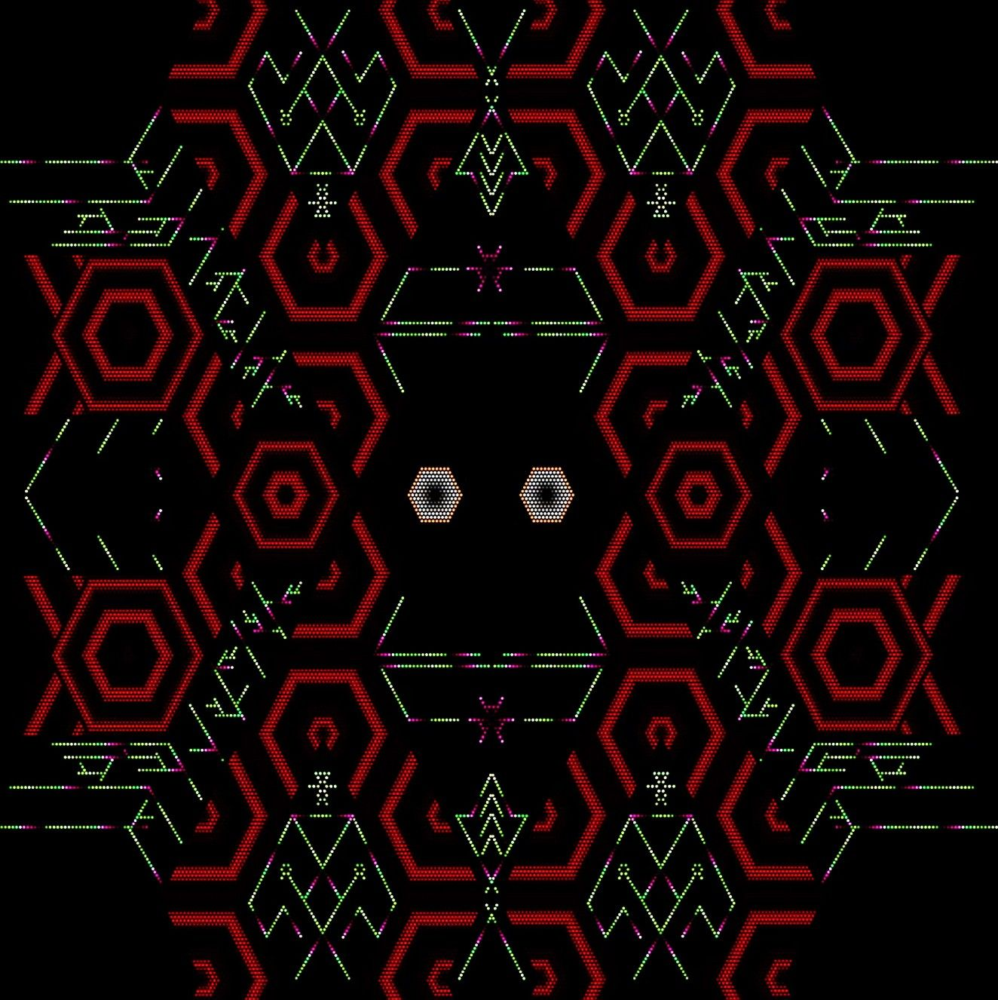
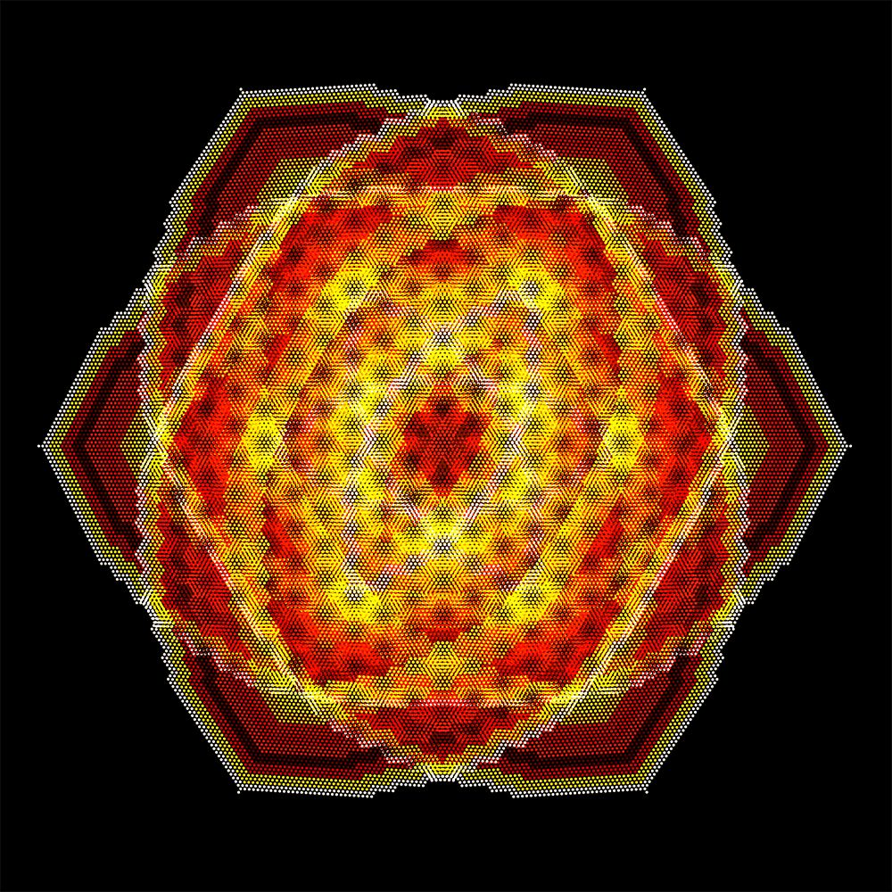
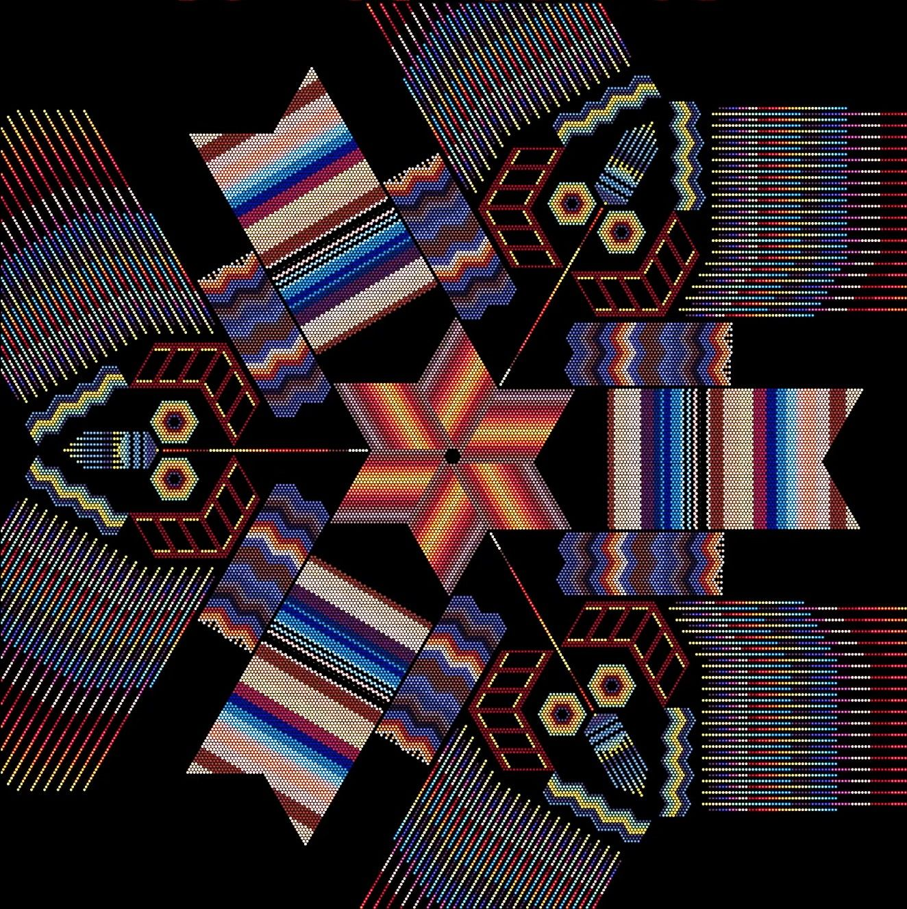
Prehispanic Temazcalli
Temazcalli (from the nahuatl temazcalli: ‘house where you sweat’. temaz, ‘sweat’ and calli, ‘House’) is a steam bath used in traditional medicine and everyday life by the people of central Mexico.
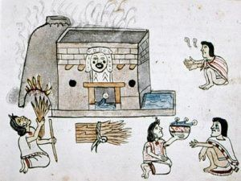
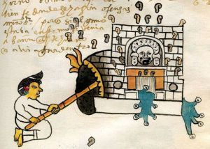
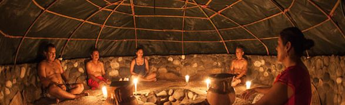
Huichol Art
The word, Huichol, derived from Wirrarika, is the original name of these indigenous people. It means soothsayer or medicine man. The medicine man is the shaman who links the community with the "other world" from where their creativity pours forth as a gift from their deified ancestors to be given back as offerings to the gods.
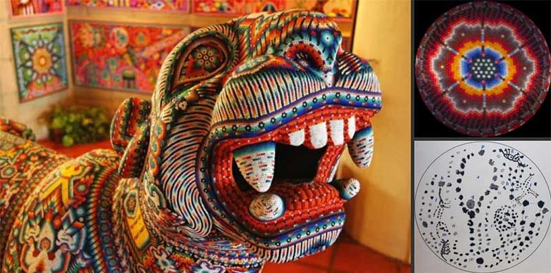
Making of
This project was completed thanks to the University of Tres the Febrero, and the “Understanding Visual Music” International Conference, during a two-year residency at the Galileo Galilei Planetarium. In order to create an accurate portrait of the Huichol culture and the ritual experience of the temazcalli, we assisted to ceremonies, researched on the Museum of Anthropology and Natual History in Mexico City and collaborated with Tozomoni, a prehispanic instrument developer.
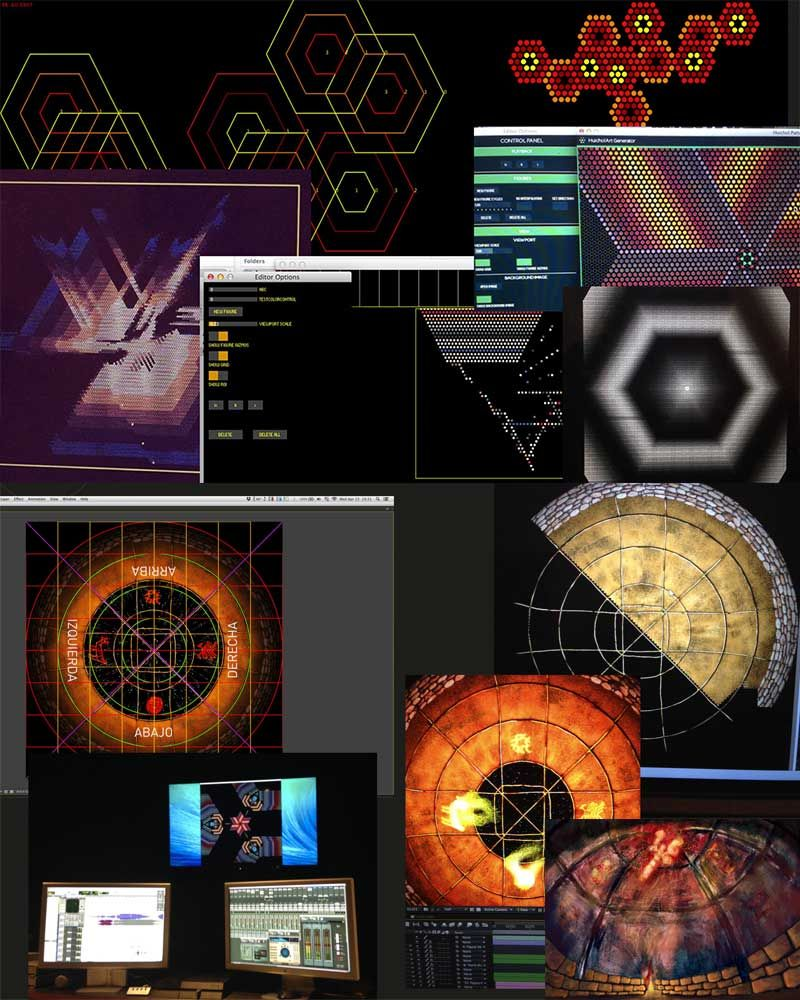
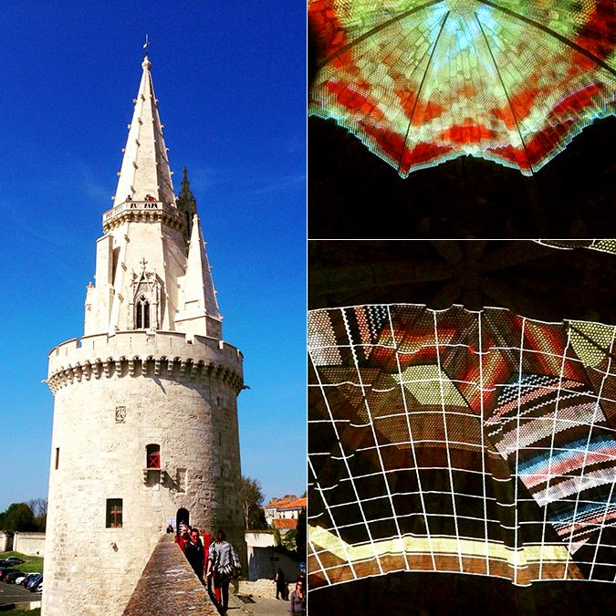
Exhibitions
- Processing Community Day - Art and Technology Encounter. Montevideo, Uruguay, 2019.
- Biennial South. Contemporary Art Biennial of South America. Buenos Aires, Argentina, 2018.
- ZERO1. Festival of Arts and Digital Cultures. Tour de la Chaîne, La Rochelle, France, 2017.
- Visual Music Show for FullDome. Planetarium of the Barranca Chapultepec, Cuernavaca, México, 2017.
- Topology FullDome. LABInter (Interdisciplinary Interactive Laboratory), UFSM Planetarium, Santa Maria, Rio Grande do Sul, Brazil, 2016.
- “Understanding Visual Music” International Conference 2016. Planetario Galileo Galilei, Buenos Aires, Argentina, 2016.
- East Village Planetarium. New York, USA, 2016.
Credits
- Project Lead, Script and Visual Development Mario Guzmán, Agustín Ramos Anzorena
- Custom Software Programming Agustín Ramos Anzorena
- Native Prehispanic Instrumentation Mario Guzmán, Agustín Ramos Anzorena
- Sound Design and Editing Joaquín Gomez
- Mixing and Multi-Channel Surround Mix BlackBox Studio
- Overall Artistic Assistance: Paloma Marquez